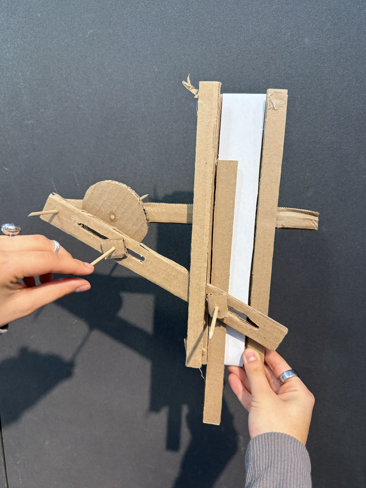
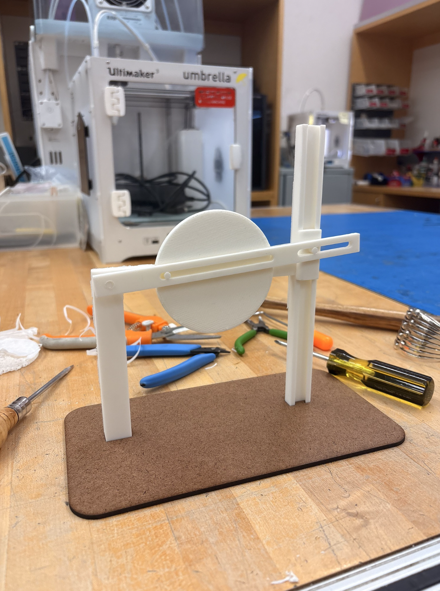
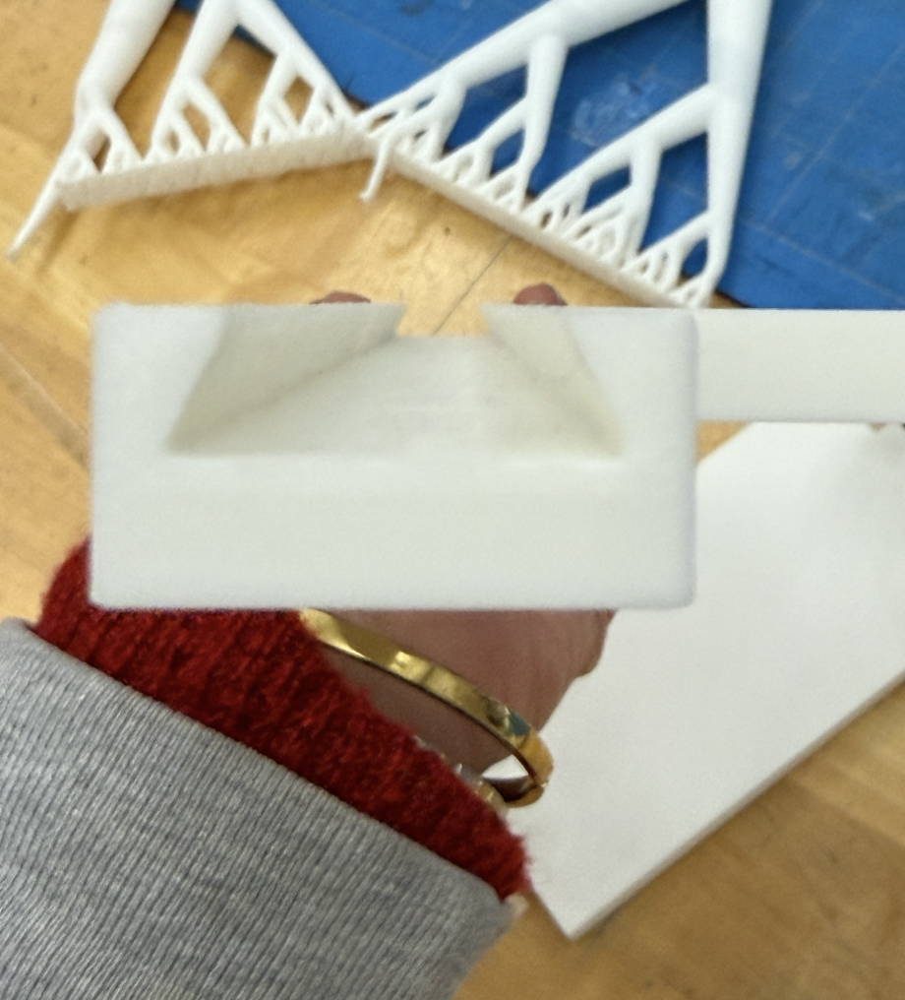
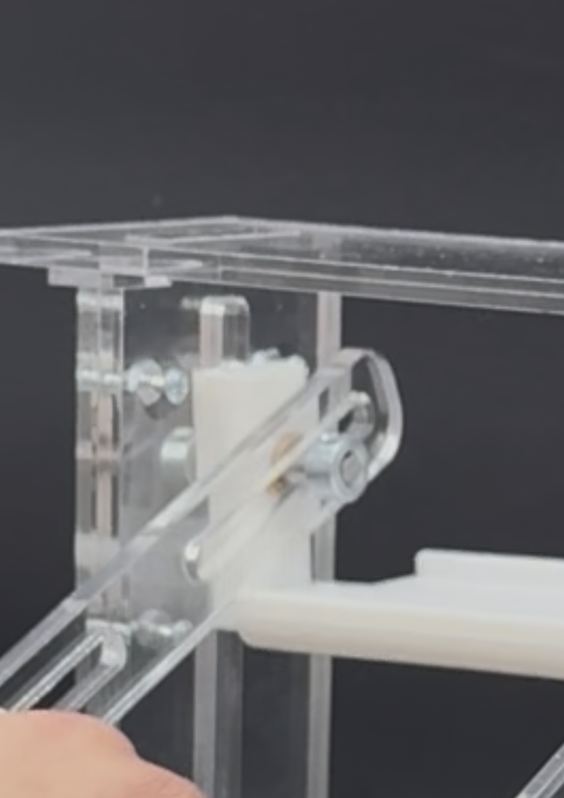
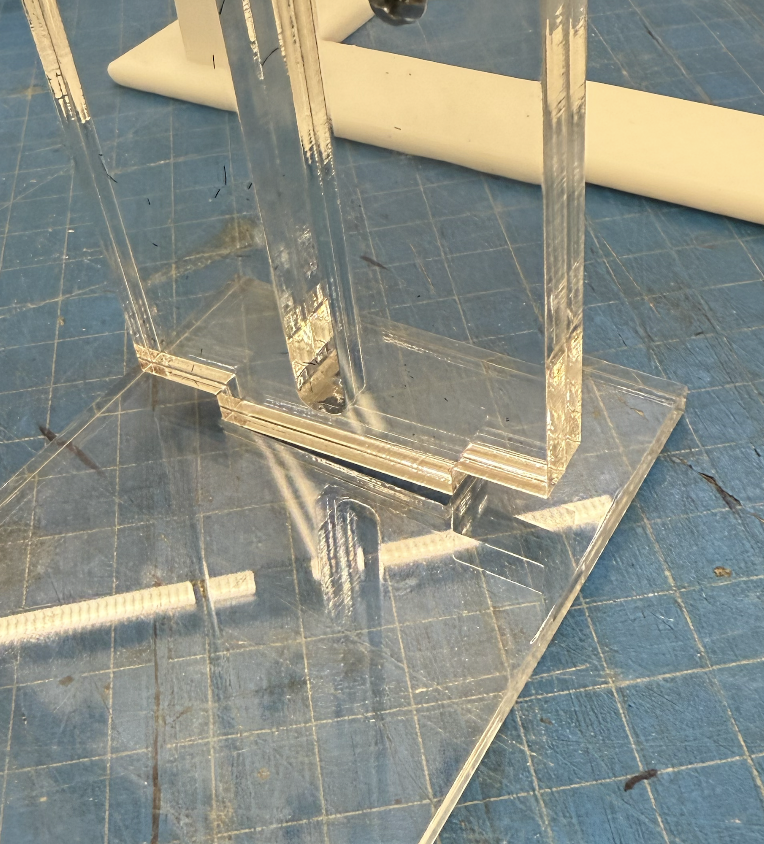
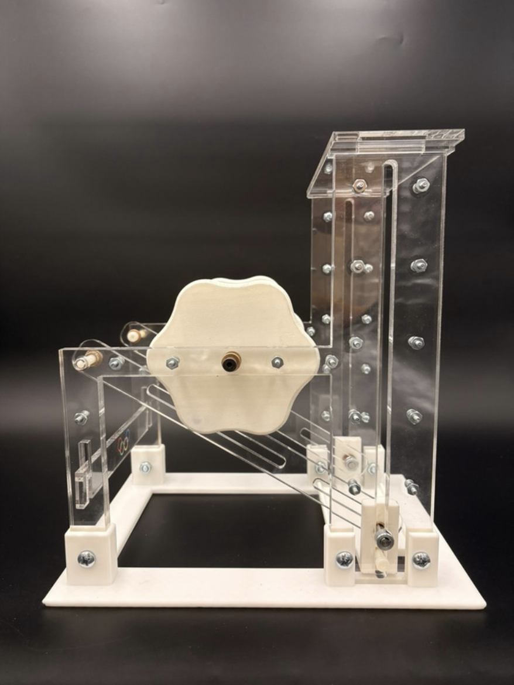
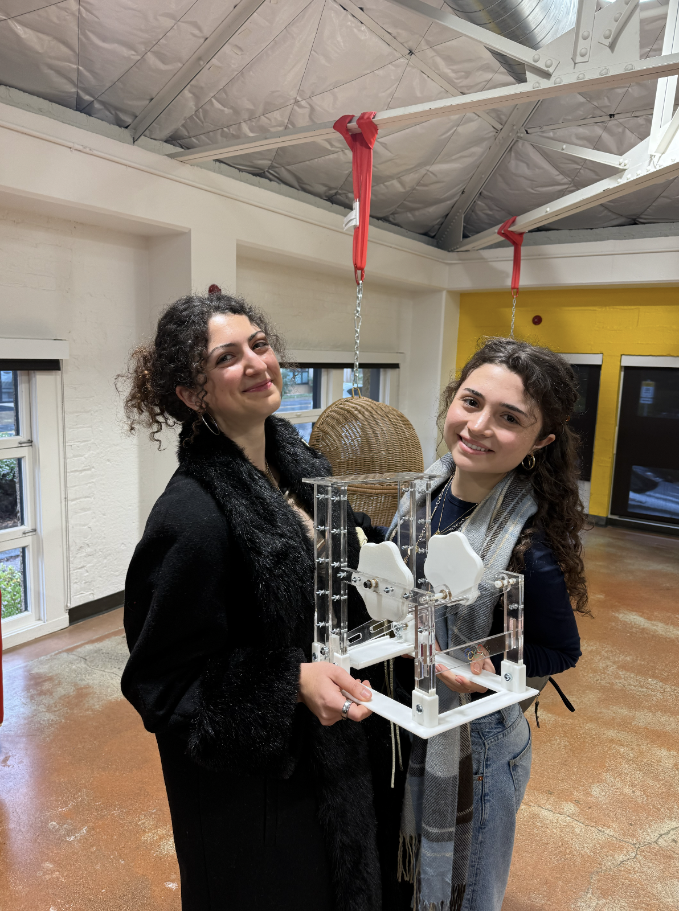

The Mechanism
Prompt: design a system for the 2026 Winter Olympics that could lift a tired athlete onto the podium. Constraint: it has to fit inside a 12×12×12" cube, take a rotational input, and output pure vertical linear motion, lifting a 2.5 lb weight with no motors, no electronics, and no adhesives.
Me and my project partner, Daria, chose the quick-return mechanism: a pin-in-slot system where a rotating wheel drives a lever through a slotted track, converting circular motion into vertical displacement. After researching and analyzing different mechanisms, we chose this one because the asymmetry of the geometry means the platform rises slowly (controlled lift) and returns quickly, which is exactly what an athlete-assist needs.
We opted to have two of these quick-return mechanisms mirroring one another, joined by a rotating handle and the raising platform. This was to provide the stability and support necessary to lift the 2.5 lb weight.
We also took on the extra optional challenge: achieving the full cycle (platform up and back down) from rotational input in a single direction. No reversing required.
The Process - Starting Prototypes

A cardboard mock-up built to prove the quick-return concept before committing to any real material. Wooden dowels for pins, paper for the sliding track.

First high-fidelity (more like medium-fidelity) prototype in 3D-printed PLA. Single mechanism, single side. Used to validate scale, slot dimensions, and shoulder screw fit.

First version with both mechanisms on a shared shaft, with a raising platform, and hardware. This is where we were able to identify the biggest issues and the real throubleshooting work began.
The integrated system in action before fixes. You can see the platform very unstable base of the system that contributed to overall misalignment.
Problems & Fixes

The original acrylic lever was too thin and visibly bent when lifting the 2.5lb weight, causing misalignment mid-cycle.
FixThe lever was thickened to better support the weight and avoid cracking. Just an example of the many small iterations made to different parts to nail down the functionality & reliability of the mechanism.

Being allowed no adhesives meant that iterative testing of tolerances was required to find the right clearance. In this specific example, different sized holes are being tested to fit a bushing snuggly with no glue and account for any discrepancies caused by the laser cutter. Similar iterations had to be made for the d-shaft hole, shoulder screws hole, base-wall fit, etc.

The original PLA sliding track generated too much friction against the lever pin, due to the trapezoidal shape of the track and the material properties of PLA, making the mechanism stiff and inconsistent under load.

Switched to a pin & slot track using laser-cut acrylic. This dramatically reduced friction and improved alignment between both mechanisms.

The original acrylic base used a tight friction fit to hold the walls in place. It was slightly too tight and with acrylic being brittle, it cracking under pressure during assembly.

Redesigned in PLA with a friction fit at the bottom, built-in supports running along each wall, and screw holes through the supports and walls, to have it triple secure.
Final Build



